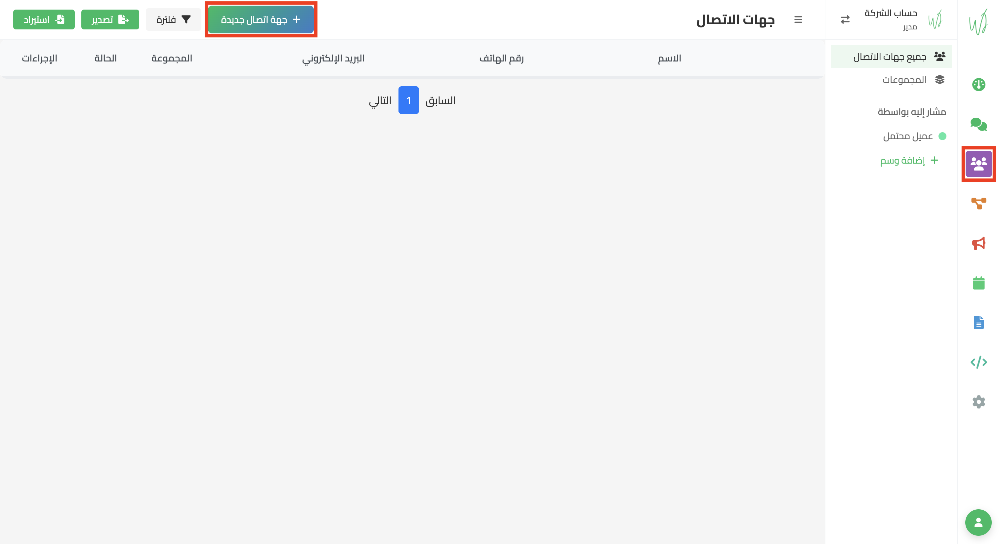
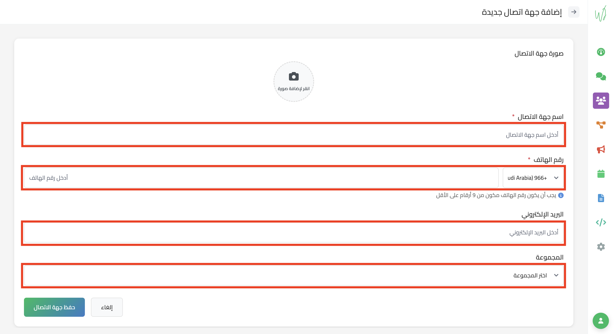

1
- انتقل إلى "جهات الاتصال"
- اختر "إضافة جهة إتصال جديدة"

صفحة جهات الاتصال
2
- ادخل بيانات جهة الاتصال
- آضغط على "حفظ جهة الاتصال"
اسم جهة الاتصال (اجباري)
رقم الهاتف (اجباري)
البريد الإلكتروني (اختياري)
المجموعة (اختياري)

صفحة إضافة جهة إتصال